Cambios leves o aislados
Pequeñas variaciones que no afectan a respirar, comer, dormir, comunicarse, moverse o cuidar. Anótalas con fecha para comentarlas en la próxima revisión.
Señales ELA sin alarmismo
No todo cambio exige salir corriendo, pero tampoco conviene esperar a la siguiente revisión cuando algo empieza a afectar a respirar, dormir, comer, hablar, moverse o sostener los cuidados en casa. Esta página ordena las señales para decidir qué anotar, qué consultar pronto y qué no dejar pasar.
La idea es sencilla: observar con calma, registrar lo importante y activar al equipo cuando el cambio ya altera la vida diaria o puede convertirse en un problema mayor.
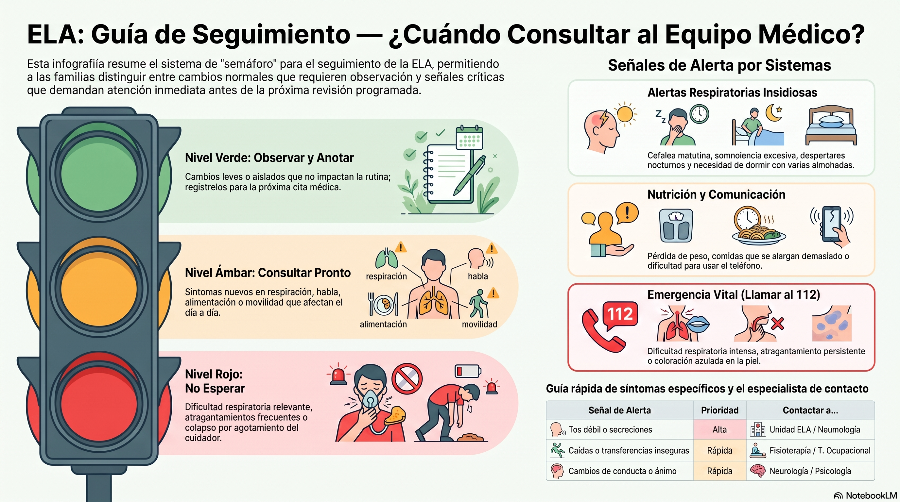
El objetivo no es vivir pendiente de cada síntoma, sino evitar dos extremos: normalizar cambios que merecen atención o convertir cualquier variación en una alarma. Si algo es nuevo, se repite o cambia la rutina diaria, conviene contarlo.
Pequeñas variaciones que no afectan a respirar, comer, dormir, comunicarse, moverse o cuidar. Anótalas con fecha para comentarlas en la próxima revisión.
Señales que ya alteran el día a día: peor descanso, comidas más largas, tos débil, caídas, dificultad para hablar o sobrecarga clara de quien cuida.
Dificultad respiratoria relevante, atragantamiento persistente, secreciones que no se manejan, imposibilidad de alimentarse con seguridad o colapso del cuidado en casa.
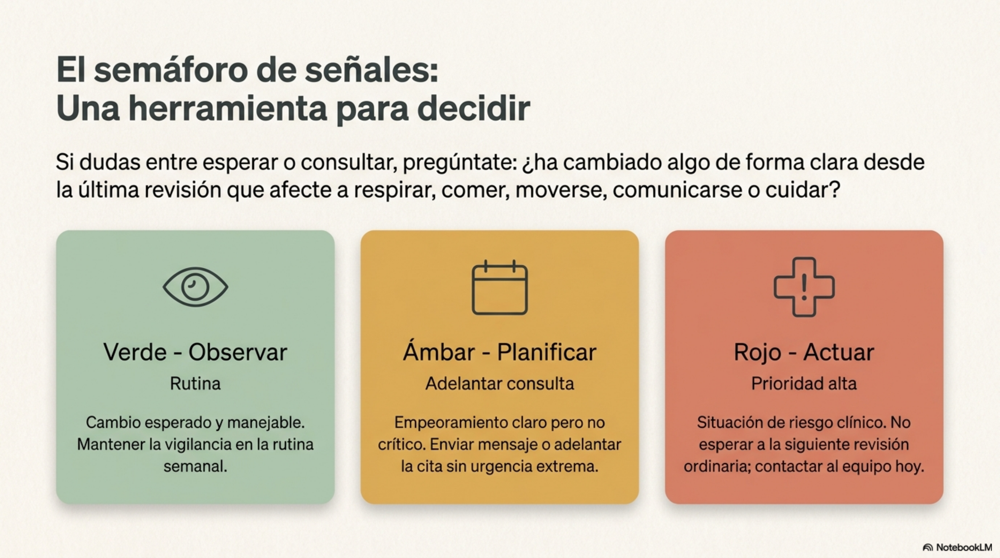
Recurso audiovisual
 Ver el vídeo en YouTube
Una explicación audiovisual para repasar el semáforo de señales, compartirlo con la familia y volver a él antes de una consulta.
Ver el vídeo en YouTube
Una explicación audiovisual para repasar el semáforo de señales, compartirlo con la familia y volver a él antes de una consulta.
En ELA los cambios respiratorios no siempre empiezan con una sensación clara de ahogo. A veces aparecen como dormir peor, despertarse más, levantarse con dolor de cabeza o notar que la tos ya no sirve para expulsar secreciones.
Falta de aire al tumbarse, necesidad de dormir más incorporado, despertares frecuentes, sueño no reparador, somnolencia diurna o cefalea matutina.
Tos cada vez más débil, dificultad para expulsar secreciones, infecciones respiratorias repetidas o sensación de que respirar exige más esfuerzo.
Dificultad respiratoria intensa, labios o piel azulados, pérdida de conciencia, atragantamiento persistente o una situación que no puede esperar.
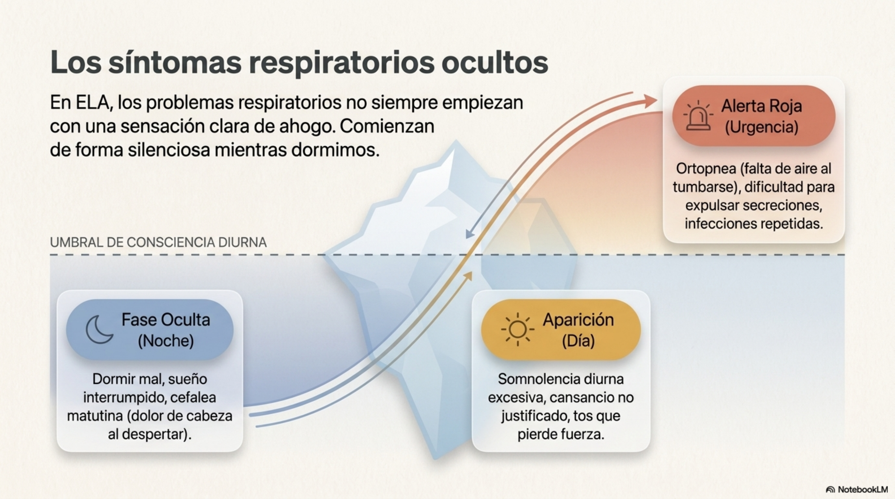
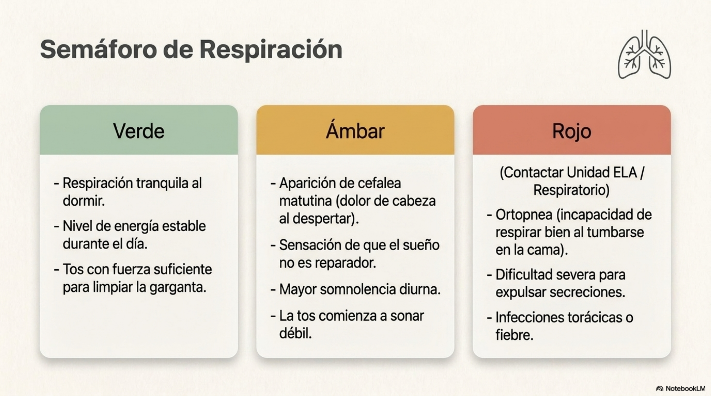
Mantener peso, hidratación y comidas seguras forma parte del tratamiento cotidiano. Conviene pedir ayuda antes de que comer se convierta en miedo, agotamiento o pérdida de peso.
Pérdida de peso, ropa más suelta o menos apetito pueden indicar que la ingesta ya no cubre lo necesario.
Atragantamientos, tos al beber, miedo a líquidos o comidas que se eternizan justifican consultar a logopedia, nutrición o la unidad ELA.
Si comer cansa demasiado o obliga a descansar a mitad, no es una tontería doméstica: es información clínica útil.
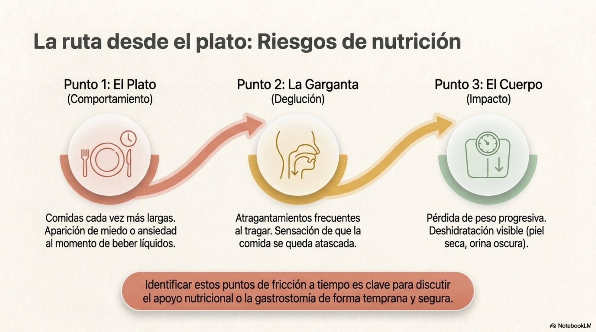
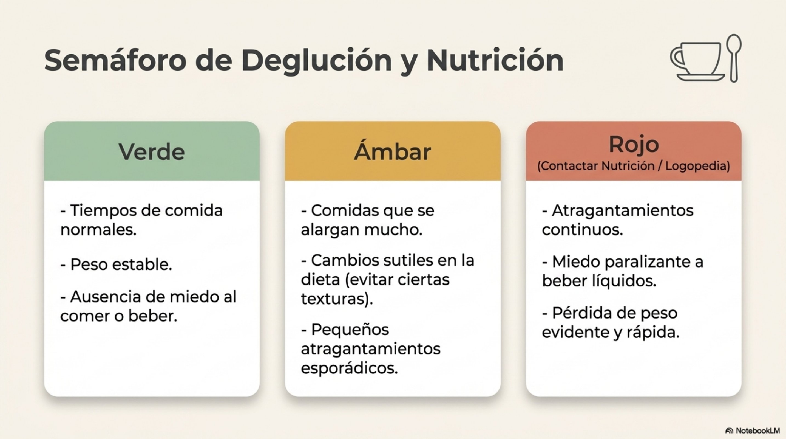
La comunicación debe anticiparse. Si hablar por teléfono, hacerse entender, escribir en el móvil o usar el ordenador empieza a ser difícil, merece una consulta aunque todavía se conserve mucha voz.
Coméntalo pronto con logopedia o el equipo de referencia para valorar estrategias, fatiga al hablar y apoyos de comunicación.
Si llamar, escribir o pedir ayuda por el móvil empieza a fallar, conviene revisar accesibilidad, pulsadores, mirada u otros sistemas.
Es mejor explorarlo cuando aún hay margen. No es rendirse: es conservar presencia, decisiones y voz propia para después.
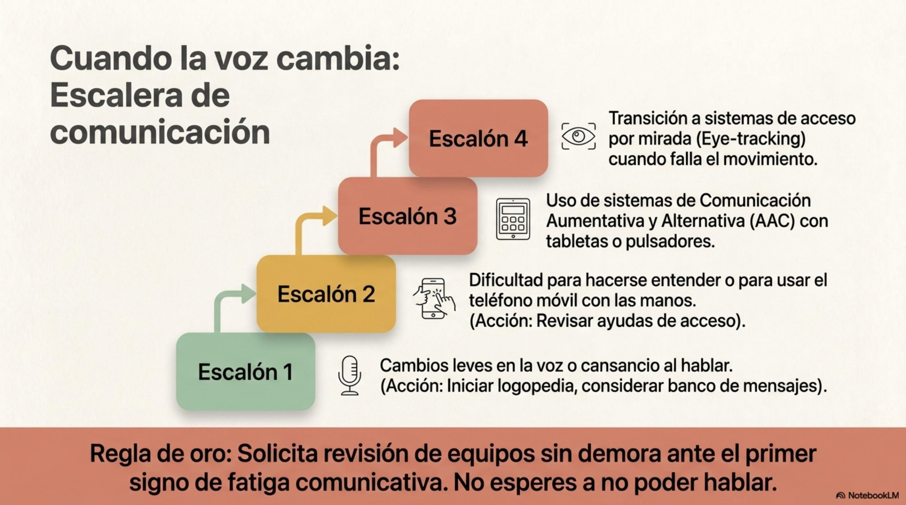
Una caída o una transferencia mal resuelta puede cambiar mucho la vida diaria. La casa, la cama, el baño, la silla y las ayudas técnicas deben revisarse antes de que cada movimiento se convierta en una maniobra de riesgo.
Caídas, casi caídas, miedo a caminar o necesidad creciente de apoyo justifican revisión funcional.
Si pasar de cama a silla, baño o sofá exige fuerza improvisada, toca consultar fisioterapia, terapia ocupacional o trabajo social.
El dolor por postura, la cabeza que cae o la dificultad para permanecer sentado también son señales importantes.
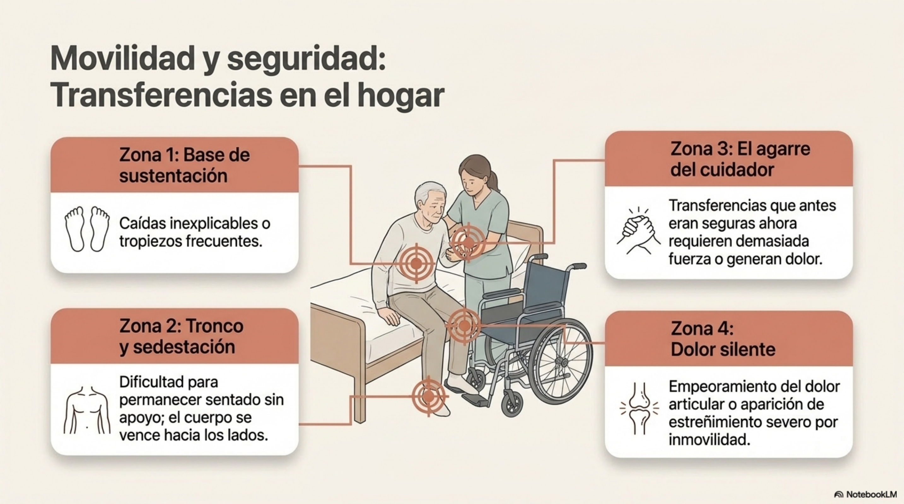
No todos los cambios relevantes son motores. Apatía, desinhibición, irritabilidad, dificultad para decidir, tristeza intensa o ansiedad persistente deben poder hablarse sin vergüenza y sin culpas.
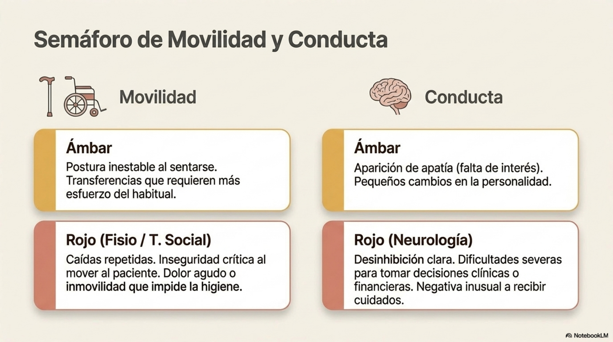
La sobrecarga del cuidador no es un asunto privado que haya que aguantar en silencio. Cuando el apoyo en casa se rompe, la persona con ELA también queda en riesgo.
Si el descanso desaparece, hay que pedir revisión del plan de cuidados, apoyos domiciliarios o recursos de respiro.
Aspiración, secreciones, transferencias, alimentación o equipos pueden requerir formación y apoyo profesional.
Cuando todo depende de una sola persona, trabajo social y asociaciones pueden ayudar a ordenar recursos y prioridades.
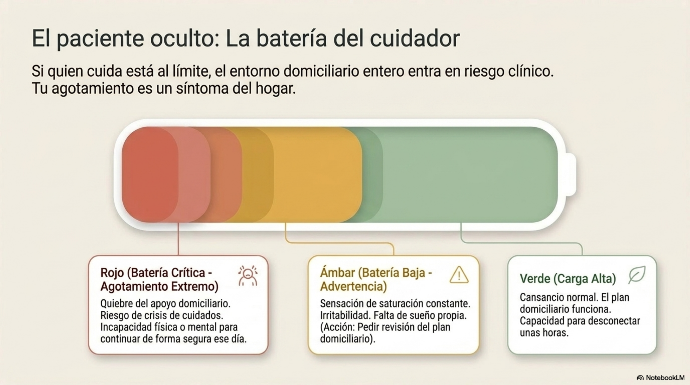
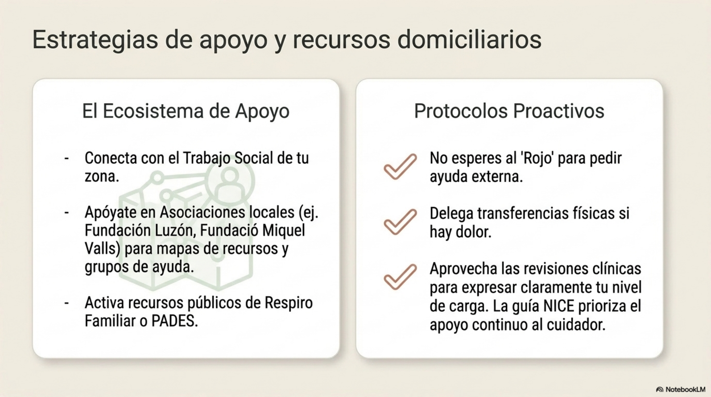
Esta tabla no sustituye los circuitos de cada territorio. Sirve para preparar la llamada, el mensaje o la consulta con una idea clara de lo que ha cambiado.
| Señal | Puede indicar | A quién contactar primero | Prioridad orientativa |
|---|---|---|---|
| Falta de aire al tumbarse, cefalea matutina o sueño no reparador | Cambio respiratorio que puede pasar desapercibido al principio. | Unidad ELA, neurología o respiratorio. | Alta; no esperar a la revisión ordinaria. |
| Tos débil, secreciones difíciles o infecciones repetidas | Tos menos eficaz o necesidad de apoyo respiratorio. | Respiratorio o unidad ELA. | Alta. |
| Pérdida de peso, atragantamientos o comidas muy largas | Riesgo nutricional o dificultad deglutoria. | Nutrición, logopedia o neurología. | Alta. |
| Habla menos clara o dificultad para usar teléfono/móvil | Necesidad de apoyo de comunicación. | Logopedia, comunicación aumentativa o terapia ocupacional. | No demorarlo. |
| Caídas, transferencias inseguras o mala postura | Necesidad de ayudas técnicas, adaptación o revisión funcional. | Fisioterapia, terapia ocupacional o trabajo social. | Rápida. |
| Cambios de conducta, ánimo o capacidad de decisión | Necesidad de valoración emocional, cognitiva o familiar. | Neurología, psicología o neuropsicología. | Rápida. |
| Agotamiento extremo del cuidador o quiebre del apoyo en casa | Riesgo de crisis de cuidados. | Trabajo social, asociación ELA o equipo clínico. | Rápida. |
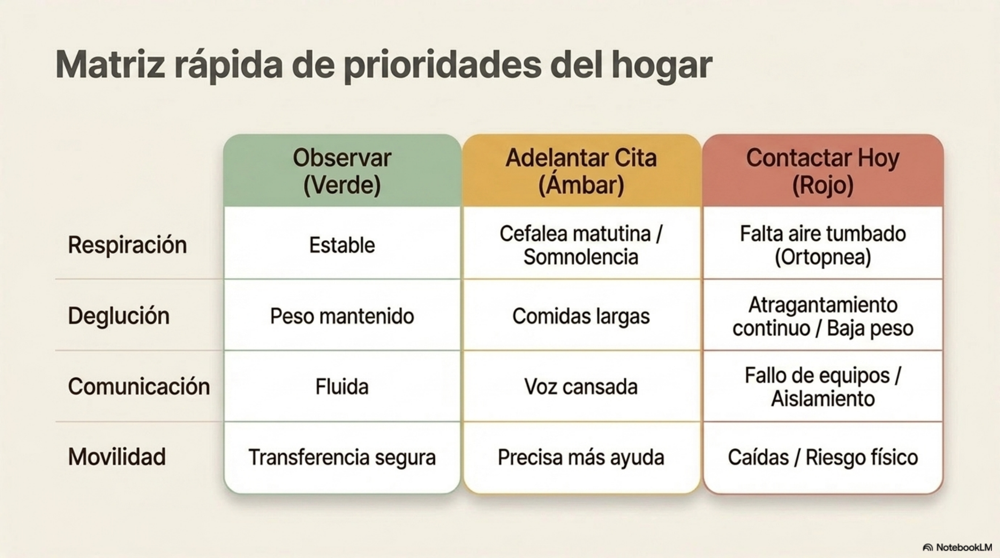
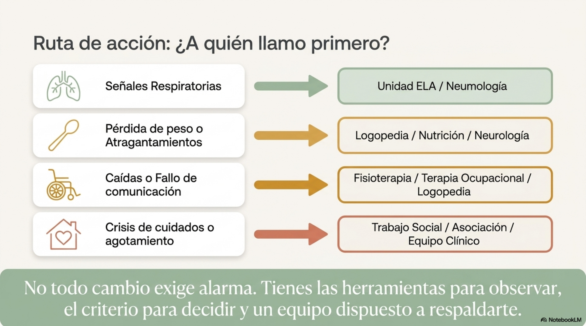
Una consulta es más útil si el equipo recibe datos concretos. No hace falta escribir un informe perfecto: basta con explicar qué ha cambiado, desde cuándo, cuántas veces ha pasado y cómo afecta al día a día.
Respiración, sueño, peso, atragantamientos, habla, movilidad, dolor, ánimo, conducta o cuidado en casa.
Una señal aislada no es lo mismo que algo que aparece cada noche, cada comida o cada transferencia.
Si impide dormir, comer, hablar, desplazarse, descansar o cuidar con seguridad, dilo de forma directa.
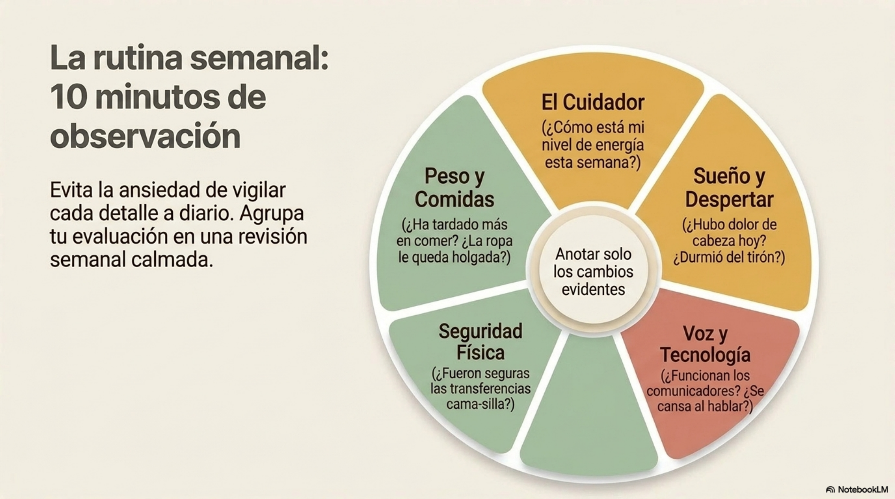
Para imprimir o revisar en familia
No hace falta marcarlo todo. Esta lista sirve para detectar cambios y decidir si merece la pena adelantar una consulta o preparar mejor la próxima revisión.
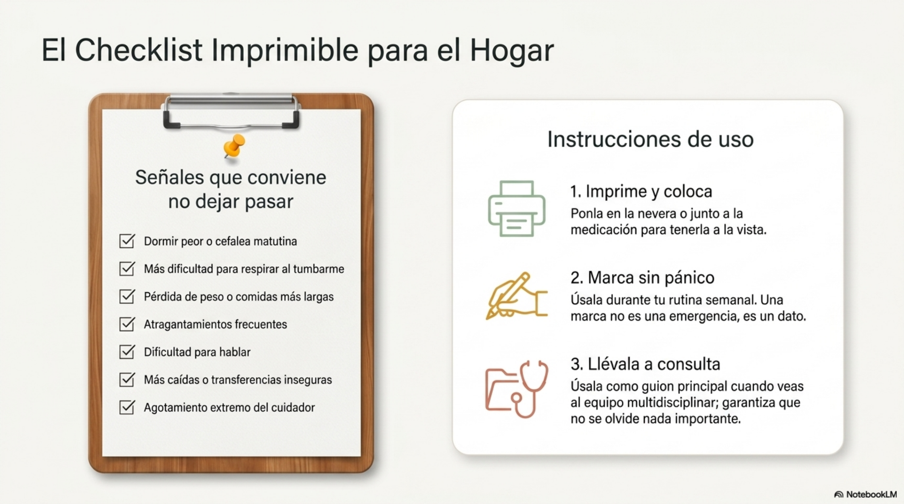
Página revisada el 10 de julio de 2026. La información resume recomendaciones clínicas y orientación práctica, pero cada caso de ELA evoluciona de forma distinta. Confirma siempre las decisiones con el equipo que conoce la situación concreta.